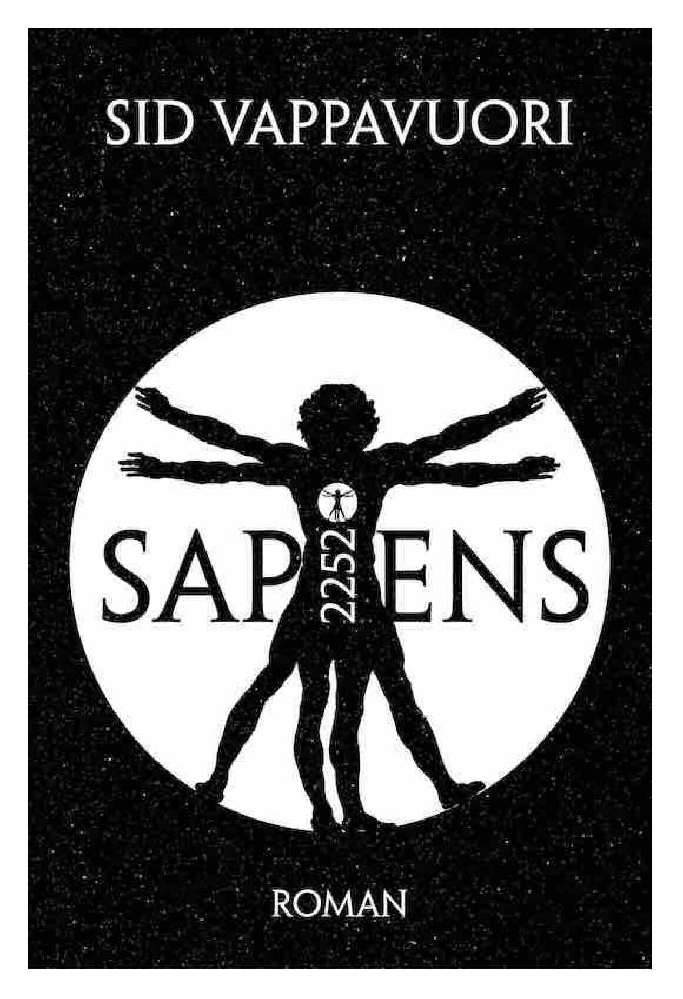

2252. Schätzungen zufolge ist heute jeder Quadratmeter der Erdoberfläche eintausend Mal größer, als noch zum Beginn des Milleniums. Neuralimplantate, kleine Computer im Hirn, machen es möglich. Sie machen die Erde größer, den Körper ewig jung und den Spaß riesengroß. Viele Lichtjahre weiter und ohne Implantat sieht die Welt ganz anders aus: Klein, dreckig, gefährlich. Der fast-schon-neunjährige Adrian lebt mit seinem Bruder und seinem Vater auf Astroid AG F2, einer unbedeutenden Mine, welche heute Punkt 14 Uhr in einer Explosion zerbersten wird. Ein Dutzend Schiffe bringt die Menschen fort. Und Adrian erwischt das falsche. Während sein Bruder und seine Schwester die übleren Ecken des Universums auf der Suche nach ihm durchkämmen, lernt Adrian das Leben auf einem Großkampfschiff des Militärs kennen, der Sleeping Beauty. Dessen aufstrebende Kapitänin sieht ebenfalls eine Welt zerbrechen: die einem gesunden, demokratischen Staat zu dienen. Doch ein Ermittler auf der Erde und ein Agent des Geheimdienstes lassen keinen Zweifel und dann ist da diese Kolonie, welche sich gegen den Willen des Senats unabhängig nennt. Als die separatistische Kolonie zu den Waffen greift kann nur die Sleeping Beauty ein Blutbad verhindern. Mit an Bord ein fast-schon-neunjähriger, blinder Passagier namens Adrian …
"Sapiens 2252" kann im Internet Archive als PDF und ePub heruntergeladen werden. Ebenfalls kann er als Digital- und Print-on-Demand-Ausgabe über Amazon bezogen werden.
Leseprobe
Eisiger Wind pfiff durch tausend unsichtbare Spalten und schuf das schaurigste Konzert, ganz als säßen sie in einer gewaltigen Orgel und als sei der Organist auf bestem Wege sich in einen Nervenzusammenbruch zu spielen. Und dennoch genügte der beständige Luftzug bloß, um die Gelenke steif und schmerzend zu machen und das Gesicht zur eisigen Maske, nicht aber um den Gestank zu zerstreuen. Schimmel, Schweiß, Urin, Exkremente und Blut waren die dominierenden Düfte und es gab nur einen Grund, weshalb nicht schon lange Verwesungsgeruch hinzugekommen war. Es war diese verfluchte Saukälte.
Noch ging immer mal wieder ein Schütteln durch seine Glieder. Doch auch das wurde immer seltener. Bitterlich frierend zog er seinen Mantel, die längst überwundene, letzte Barriere zwischen sich und der allgegenwärtigen Kälte, enger. Er war kein Typ, der wegen unveränderlicher Zu- und Umstände Szenen machte. Nicht nachdem seine Nase nichts mehr roch und seine Finger nichts mehr fühlten, seinem Magen das Knurren vergangen und sein eigentlich doch schwarzes Haar weiß geworden war. Weiß vom Frost.
Das Schlimmste war aber was die Kälte mit dem Verstand anstellte. Was er Leute hat tun sehen, als es letztlich Knack gemacht hatte ... In etlichen Fällen hatte man der Kälte zuvorkommen müssen, um die Sicherheit des Schiffes zu gewährleisten. Selbsterhaltung ließ einen unangenehme Dinge tun ...
Er würde nicht zu diesen Fällen zählen bei denen es Knack machte. Anstatt sich zu echauffieren tat er alles, um wach zu bleiben. Bereits am Steg, noch bevor er an Bord gegangen war, hatte man ihn gewarnt: Weit nicht alle, die auf ein solches Schiff stiegen, träten am Ende der Reise wieder davon herunter. Und jene, die einschliefen, waren die Ersten, die starben. Zusammen mit denen, welchen die Kälte das Hirn zersetzte. Bei denen es Knack machte.
Sein Blick wanderte träge durch die Kammer. Jetzt war alles träge. Er fragte sich, ob nicht vielleicht die ganze Welt langsamer geworden war. Alle seine Sinne legten das nahe. Er hatte Schwierigkeiten zu fokussieren. Alles schien so unendlich langsam zu sein. Vielleicht war gar nicht er allein, sondern die ganze Welt in Trägheit verfallen? Gab es überhaupt, nun wo sich ihrer beider Temperatur stetig anglich, noch einen Unterschied zwischen ihm und dem übrigen Schiff? Es musste so sein. Die Welt war es, die langsamer geworden war. Ja.
Weiterlesen: Der vollständige Roman steht im Internet Archive als PDF und ePub zum kostenlosen Download sowie als Volltext zum Online-Lesen bereit.